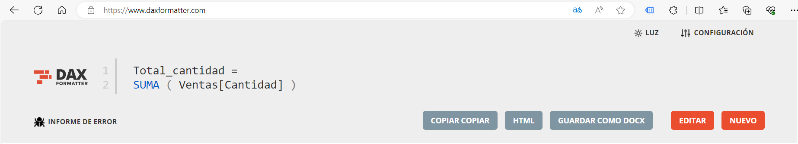

LENGUAJE DAX¶
DAX significa Expresiones de Análisis de Datos. Es un lenguaje de fórmulas que se utiliza en diferentes herramientas de Microsoft y te permite crear medidas, columnas calculadas, tablas calculadas y seguridad a nivel de filas.
Aviso
DAX no es sensible a mayúsculas o minúsculas.
Existe una herramienta gratuita que transforma las fórmulas DAX en código limpio, atractivo y legible.
